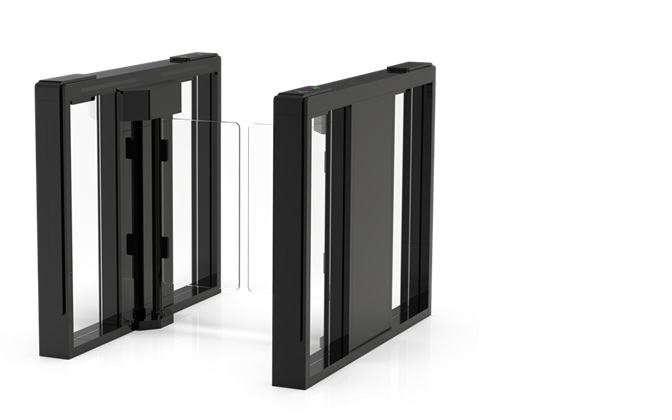
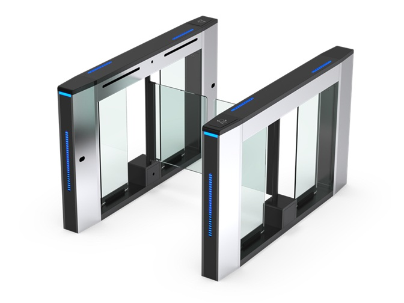
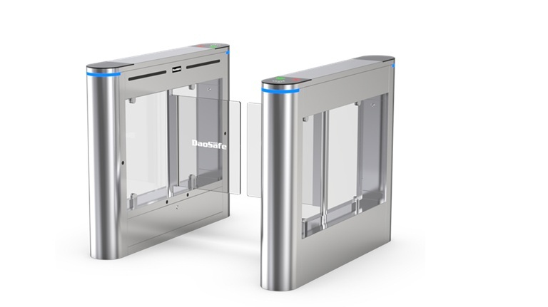
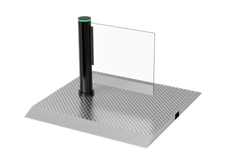

บานสวิงดีไซน์หรูหรา รองรับการเข้า-ออกกว้างพิเศษสำหรับวีลแชร์

มีไฟ LED แถบยาวที่ตัวเครื่อง แบบ Dynamic LED Strip

รุ่นยอดนิยมสำหรับพื้นผิววัสดุสแตนเลส ให้ความโค้งมนแบบ Round Edge

เป็นบานสวิงแบบเสาเดี่ยว (Single Post Swing Gate) ที่มีดีไซน์กะทัดรัด
เลือกจัดสเปกเครื่องและรับใบเสนอราคาสำหรับติดตั้งประตูได้ทันที